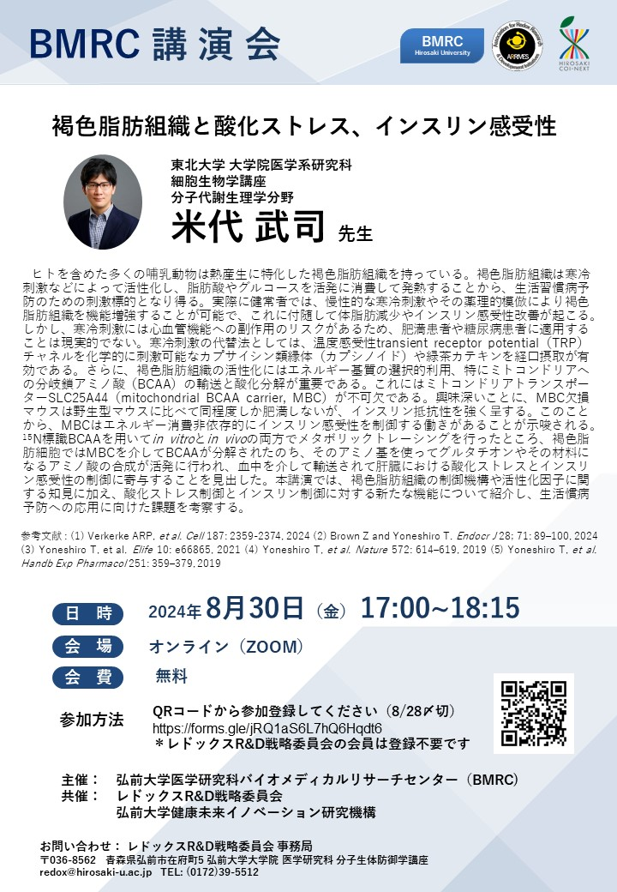

第６回 講演会
褐色脂肪組織と酸化ストレス、インスリン感受性
講師：米代 武司 先生（東北大学 大学院医学系研究科 細胞生物学講座 分子代謝生理学分野）
主催：弘前大学医学研究科バイオメディカルリサーチセンター（BMRC)
共催：レドックスR&D 戦略委員会，弘前大学健康未来イノベーション研究機構
日 時：令和6年8月30日（金）17:00~18:15
場 所：オンライン（ZOOM）
[要旨]
ヒトを含めた多くの哺乳動物は熱産生に特化した褐色脂肪組織を持っている。褐色脂肪組織は寒冷刺激などによって活性化し、脂肪酸やグルコースを活発に消費して発熱することから、生活習慣病予防のための刺激標的となり得る。実際に健常者では、慢性的な寒冷刺激やその薬理的模倣により褐色脂肪組織を機能増強することが可能で、これに付随して体脂肪減少やインスリン感受性改善が起こる。しかし、寒冷刺激には心血管機能への副作用のリスクがあるため、肥満患者や糖尿病患者に適用することは現実的でない。寒冷刺激の代替法としては、温度感受性transient receptor potential（TRP）チャネルを化学的に刺激可能なカプサイシン類縁体（カプシノイド）や緑茶カテキンを経口摂取が有効である。さらに、褐色脂肪組織の活性化にはエネルギー基質の選択的利用、特にミトコンドリアへの分岐鎖アミノ酸（BCAA）の輸送と酸化分解が重要である。これにはミトコンドリアトランスポーターSLC25A44（mitochondrial BCAA carrier, MBC）が不可欠である。興味深いことに、MBC欠損マウスは野生型マウスに比べて同程度しか肥満しないが、インスリン抵抗性を強く呈する。このことから、MBCはエネルギー消費非依存的にインスリン感受性を制御する働きがあることが示唆される。15N標識BCAAを用いてin vitroとin vivoの両方でメタボリックトレーシングを行ったところ、褐色脂肪細胞ではMBCを介してBCAAが分解されたのち、そのアミノ基を使ってグルタチオンやその材料になるアミノ酸の合成が活発に行われ、血中を介して輸送されて肝臓における酸化ストレスとインスリン感受性の制御に寄与することを見出した。本講演では、褐色脂肪組織の制御機構や活性化因子に関する知見に加え、酸化ストレス制御とインスリン制御に対する新たな機能について紹介し、生活慣病予防への応用に向けた課題を考察する。
（参考文献）
1. Verkerke ARP, et al. Cell 187: 2359-2374, 2024
2. Brown Z and Yoneshiro T. Endocr J 28; 71: 89–100, 2024
3. Yoneshiro T, et al. Elife 10: e66865, 2021
4. Yoneshiro T, et al. Nature 572: 614–619, 2019
5. Yoneshiro T, et al. Handb Exp Pharmacol 251: 359–379, 2019
